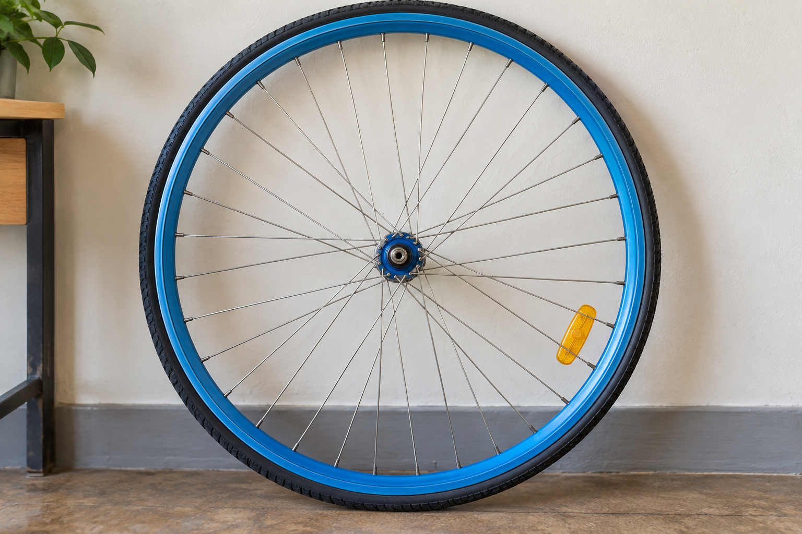

Длина окружности и площадь круга
Разберём, что означает число π, выведем две главные формулы и применим их к знакомым предметам.
1. Радиус и диаметр
Радиус r соединяет центр круга с любой точкой на окружности. Диаметр d проходит через центр и равен двум радиусам.
d = 2r Диаметр всегда в два раза больше радиуса
Чертёж остаётся чётким при увеличении
Схемы сохраняются как SVG, поэтому подписи и линии не размываются на телефоне или большом экране.
2. Длина окружности
Отношение длины любой окружности к её диаметру постоянно. Это число обозначают греческой буквой π и приближённо считают равным 3,14.
C = 2πrесли известен радиус
C = πdесли известен диаметр

Пример: колесо радиусом 35 см
C = 2 × 3,14 × 35 = 219,8 см
За один полный оборот колесо проедет примерно 2,2 метра.
3. Площадь круга
Площадь зависит от квадрата радиуса. Если радиус увеличить в два раза, площадь станет больше в четыре раза.
S = πr2S — площадь, r — радиус, π ≈ 3,14
Продолжим пример
S = 3,14 × 352 = 3 846,5 см²
Проверь себя
Диаметр круглого стола равен 120 см. Какова длина его края?